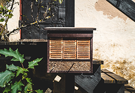

DIY Beekeeping: Making Your Own Hive Components
This general overview of ideas on how to build your own hive components should get the gears turning for you, but if you would like specific instructions on how to build your own hive, check out Build Your Own Beekeeping Equipment by Tony Pisano. This guide includes step-by-step illustrated instructions to help you build hive bodies, supers, frames, feeders, and more ...
266 3